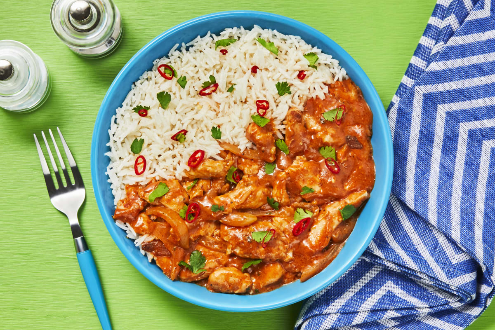
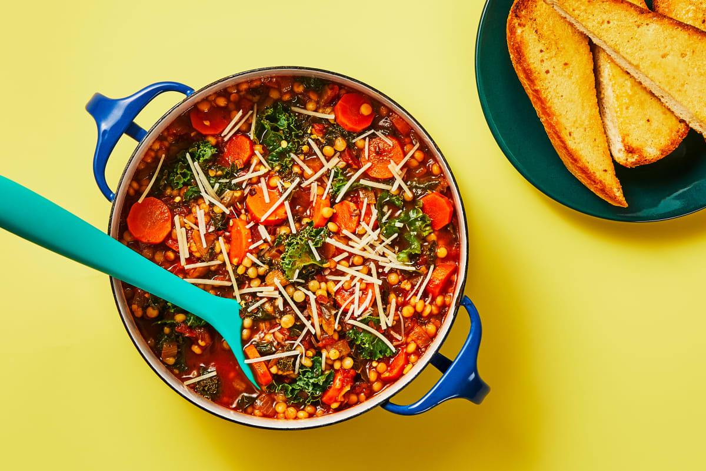
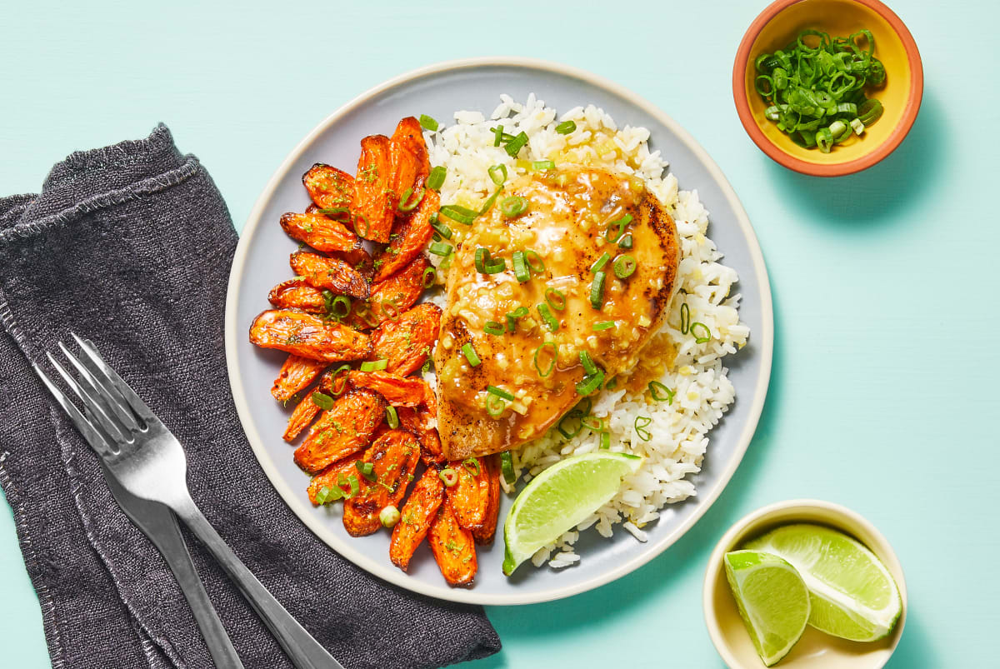

Chicken Tikka Masala
This recipe was published by Hello Fresh.
Italian Garden Veggie Soup
This recipe was published by Hello Fresh.
Miso Apricot Chicken
This recipe was published by Hello Fresh.
Planning for the Future
In pulling these recipe photos for this website, I'm reminded of how much I enjoy cooking and would like to do more (eventually). I would prioritize trying these recipes for a dinner I would host after my semester ends.